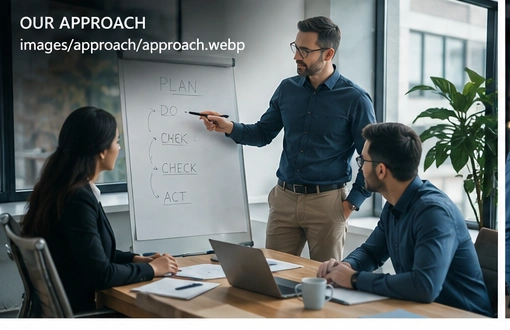

Project Management
Governance, PMO, delivery assurance, stakeholder management and successful execution.
Learn More →Helping organisations improve operational performance, deliver strategic projects and adopt Artificial Intelligence with confidence.
Combining strategic thinking, project delivery and Artificial Intelligence to achieve measurable business outcomes.
Governance, PMO, delivery assurance, stakeholder management and successful execution.
Learn More →Practical AI adoption focused on productivity, efficiency and measurable business value.
Learn More →Supporting organisations through strategic change and operational improvement.
Learn More →Improving processes, performance and ways of working to create sustainable operational results.
Learn More →We combine strategic thinking, delivery excellence and Artificial Intelligence to help organisations create sustainable business value.
Clear direction supported by practical recommendations and measurable outcomes.
Experienced governance, PMO leadership and stakeholder management.
Practical adoption focused on business value rather than hype.
Supporting organisations beyond delivery through continuous improvement.

Every engagement follows a proven framework designed to minimise risk, improve execution and maximise value.
Understand the business, people and strategic objectives.
Build a realistic roadmap aligned with business priorities.
Execute with governance, quality and transparency.
Measure outcomes and drive continuous improvement.
Let's discuss your objectives and explore how BSGA Consulting can support your next strategic initiative.